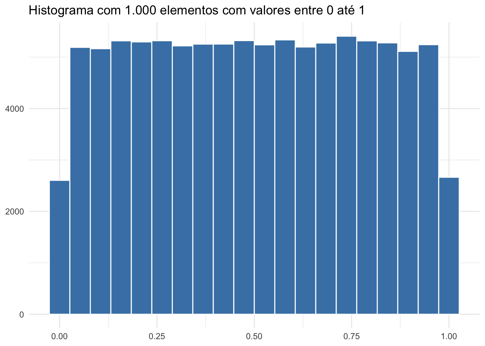
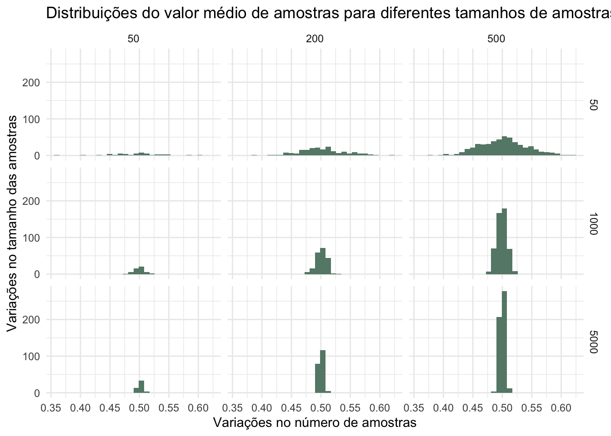

O Teorema central do limite - na teoria das probabilidades - afirma que quando o tamanho da amostra aumenta, a distribuição amostral da sua média aproxima-se de uma distribuição normal.
Isto é verdadeiro mesmo quando a distribuição da população não é normal.
Vamos verificar se conseguimos um exemplo deste fenômeno, considerando uma população de 1.000 elementos entre 0 e 1 gerados a partir de uma distribuição uniforme.
Primeiro vamos gerar nossa população:
```{r}#| warning: false#| message: falselibrary(tidyverse)num = 100000# criamos uma população de 1000 elementos distribuidos entre 0 e 1 uniformementepopulacao = tibble(elemento = runif(n = num))populacao |> ggplot() + geom_histogram(aes(elemento), bins = 20, fill = "steelblue", color = "white") + theme_minimal() + labs(title = "Histograma com 1.000 elementos com valores entre 0 até 1", x = NULL, y = NULL)```

Segundo o Teorema Central do Limite, conforme o tamanho da amostra aumenta, a distribuição amostral da média se aproxima de uma distribuição normal.
Desta forma, mesmo que a distribuição da população não siga uma distribuição normal a distribuição da média amostral seguirá o formato de uma distribuição normal.Vamos verificar se isto acontece para a nossa população.
Podemos avaliar tanto o impacto do tamanho da amostra quanto do número de amostras realizadas. Vamos analisar considerando a combinação de amostras de tamanho 50, 1000 e 10.000 elementos, e de número de amostras de 50, 200 e 500.
Produzindo Amostras
Para gerar as amostrar vamos utilizar a função R-base sample:
Warning: Returning more (or less) than 1 row per `summarise()` group was deprecated in
dplyr 1.1.0.
ℹ Please use `reframe()` instead.
ℹ When switching from `summarise()` to `reframe()`, remember that `reframe()`
always returns an ungrouped data frame and adjust accordingly.
`summarise()` has grouped output by 'sample_size', 'num_of_samples'. You can
override using the `.groups` argument.
combined_data |>ggplot(aes(x = values)) +geom_histogram(fill ="#668877") +facet_grid(sample_size ~ num_of_samples) +labs(title ="Distribuições do valor médio de amostras para diferentes tamanhos de amostras e diferentes números de amostras coletados",x ="Variações no número de amostras",y ="Variações no tamanho das amostras") +theme_minimal()
`stat_bin()` using `bins = 30`. Pick better value with `binwidth`.

Pelo gráfico gerado vemos que o formato de curva normal se apresentou em todas as situação. Percebemos que com o aumento no tamanho da amostra (50, 1.000, 10.000) é responsável por uma concentração das médias amostrais. Enquanto que o aumento no número de amostras realizadas é responsável por uma suavização da curva.
Citation
BibTeX citation:
@misc{abreu2021,
author = {Abreu, Marcos},
title = {Probabilidade da Média Amostral},
date = {2021-08-21},
url = {https://abreums.github.io/posts/2021-08-21-proabilidade-da-media-amostral/},
langid = {pt-br}
}
![]()